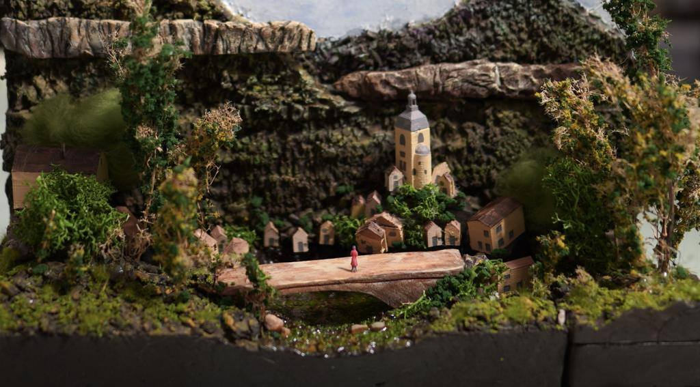
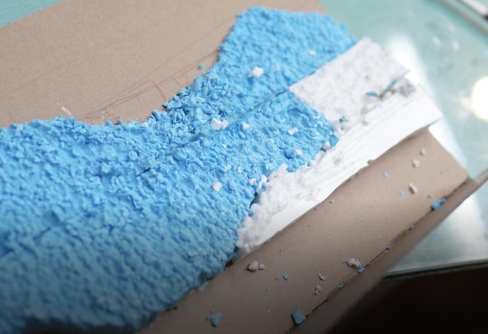
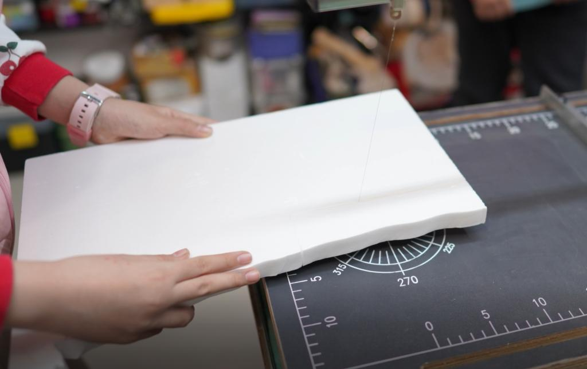
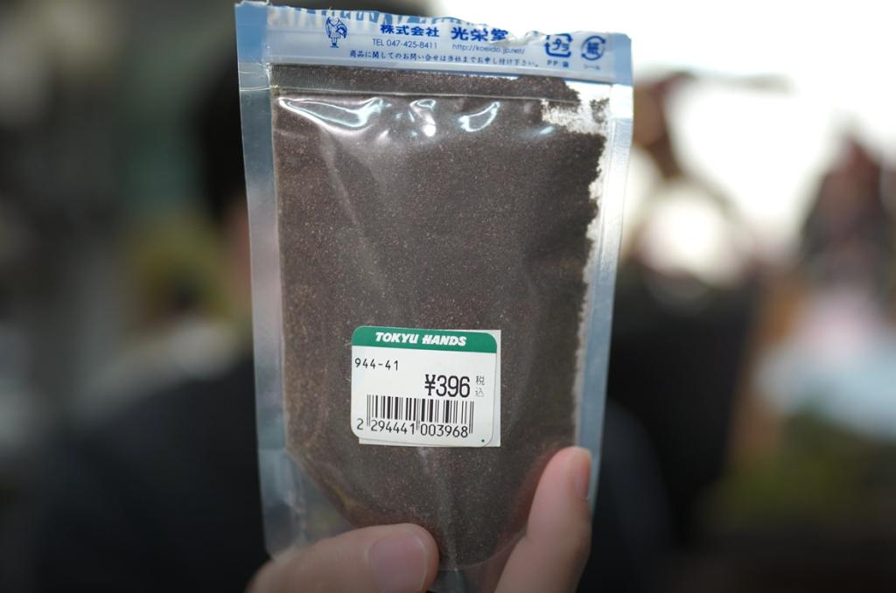
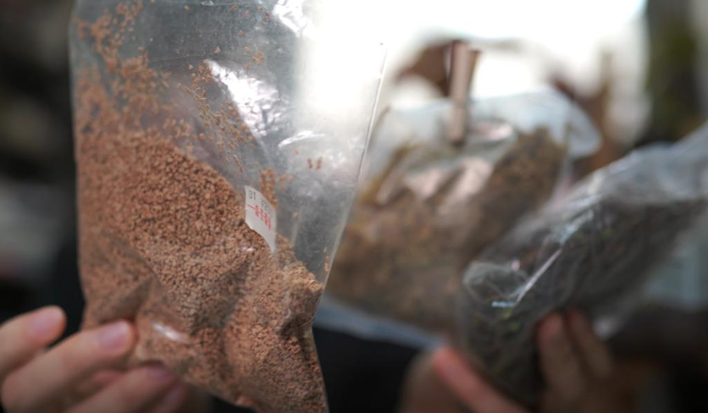
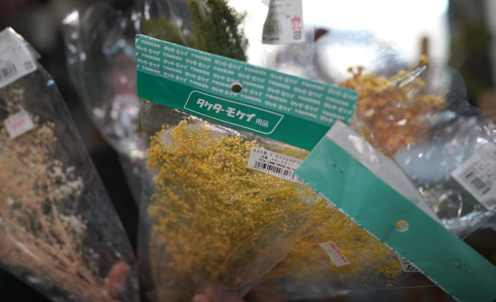
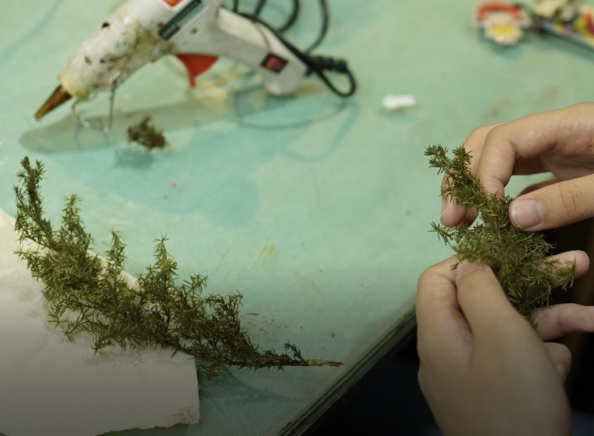
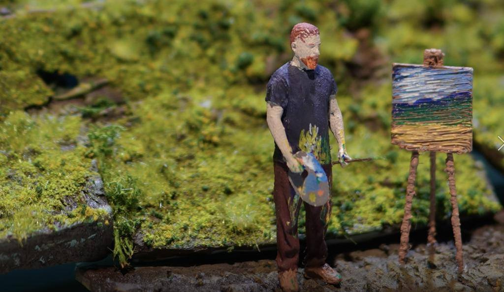

公开课
选择合适的材料——在模型制作中的探索
在模型制作的过程中，选择合适的材料是至关重要的。不同的材料具有不同的特点和用途，因此了解并熟悉它们的属性对于创作出优秀的作品至关重要。在这篇文章中，我将重点介绍几种常见的材料，探讨它们的特点和适用范围。

首先，我要提到一种薄而脆弱的板材。尽管它的薄度让它变得非常轻便，但它不太适合雕刻。对于需要进行雕刻的项目来说，我们应该选择其他更为适合的板材，因为它们更具厚度和坚固性。这种薄而脆弱的板材主要适用于建筑的内墙和内部支撑结构，而不适合雕刻。

另一种我们需要关注的材料是泡沫板。这种材料有可选的厚度，非常适合各种雕刻需求。它具有丰富的细节和纹理，可以用于创作各种场景，例如山石、桥梁等。泡沫板的颗粒粉也有多种颜色可供选择，从混合色到单色都有。不同颗粒粉的细度也不同，可以用于表现不同的树木和环境。在模型制作中，这种泡沫板成为了非常受欢迎的选择，因为它的质感和细腻程度使得作品更加精致和写实。

除了泡沫板，我们还可以使用一些辅助材料来增加作品的细节。例如，草粉可以用静电植草机竖立起来，营造出真实的草地效果。草粉的颗粒细度非常细，接近草地的土壤原本的样子，非常适合制作精细的模型。另外，地形粉颗粒和石子也可以用来表现自然的地貌和石头的质感。这些材料的使用可以提高作品的写实程度，让观赏者感受到更加真实的环境。

在模型制作中，还有一些其他的辅助材料，如藤蔓和植被。这些软而有弹性的材料可以用来模拟植物的效果，尤其适用于远景和细节刻画。藤蔓可以通过捏揉和塑造来表现出自然的曲线和纹理，而植被可以通过粘贴和调整来模拟出树木和灌木的形态。这些辅助材料的使用能够为模型增添生气和自然感，使观赏者感受到仿佛置身于真实的自然环境中。

除了材料的选择，制作模型时的技巧和细节处理也非常重要。对于需要使用多种材料的项目，我们需要考虑它们之间的黏合性和相互配合，以确保整体结构的稳定性和牢固性。同时，我们还需要注意处理模型的各个细节，如雕刻的纹理、涂料的颜色和细节、植物的排列和形态等，这些细节能够使作品更加精美和引人注目。

在模型制作的过程中，选择合适的材料是至关重要的。通过了解材料的特点和用途，我们能够更好地创作出精致和逼真的作品。泡沫板、草粉、地形粉、藤蔓和植被等材料的使用能够为模型增添细腻的质感和真实的环境效果。而在处理细节时，我们需要注重黏合和配合，以及雕刻、涂料和植物的处理，这些都是使作品更加精美和出色的关键。

在模型制作的旅程中，选择合适的材料并善用技巧，可以让我们的作品更加生动和引人入胜。因此，对于每一个模型制作者来说，对不同材料的了解和运用都是不可或缺的一部分。只有经过认真思考和精心选择，我们才能创造出令人赞叹的作品，为观赏者带来无尽的惊喜和享受。
